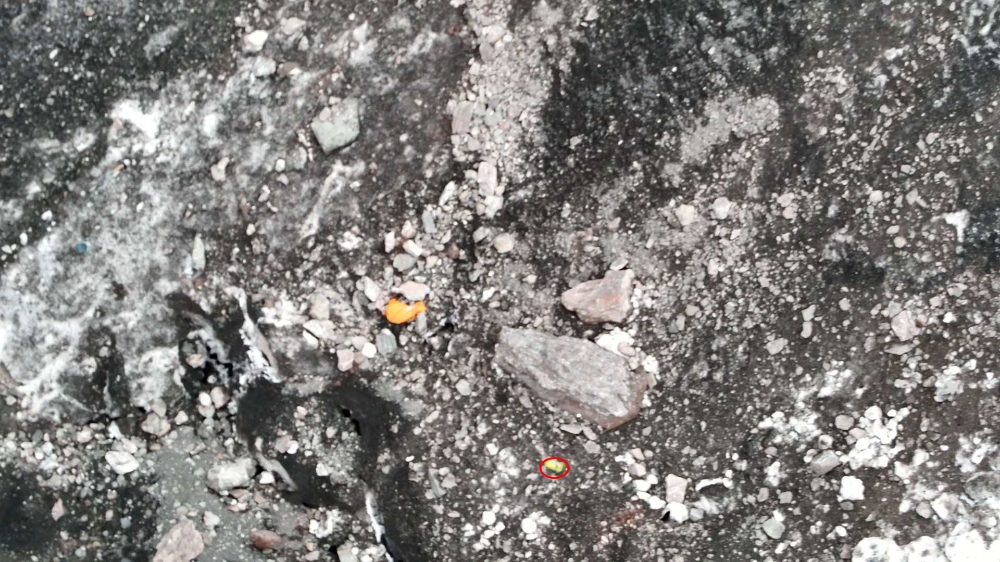
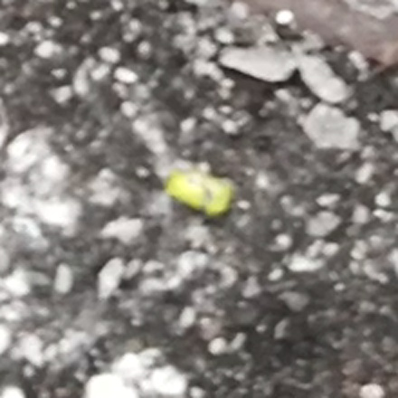

Три догруженных ролика вечерней партии 15.08
Ночь на 16 августа 2026. В dron-part2/ доехали три
полноразмерных ролика, которых раньше не было ни на одном источнике, и один зум-снимок.
Прогнаны через весь конвейер: телеметрия, оба детектора, ИИ-отсмотр, слои покрытия.
1Коротко: что нашли
Из трёх роликов новую землю снимает только один — 165537, он идёт
по коридору ниже самой нижней находки реестра. Два других — крупный план
уже известного кластера вещей и длиннофокусное наблюдение далёкой стены.
2Куда летал дрон
| 162956_0001 16:29, 15:16 |
39,4827–39,4835 N, 73,5849–73,5854 E — пятно 92 × 41 м. Высота MSL 4529 → 4585 м, тангаж −45…−70°. Зависания над известным кластером вещей; минимум 19 м до палки и миски на 13:58. |
| 165537_0001 16:55, 8:33 |
39,4840–39,4853 N, 73,5849–73,5854 E — полоса 137 × 42 м. Высота MSL 4498–4527 м, ниже палки на 4529 м, тангаж −47…−51°. 106–234 м севернее кластера: продолжение линии падения вниз. Приоритетный ролик. |
| 183932_0001 18:39, 5:57 |
Зависание в одной точке 39,48632 N, 73,59379 E (пятно 1 м), высота MSL 4927 м, тангаж +20…−38°, взгляд на ЮВ. Наблюдательный пост: длинный фокус на стену и гребень, до кластера 725–800 м. Луч выше горизонта, но в небо не уходит — массив поднимается до 6096 м. |
Полный 183932_0001_Z.MP4 (5:57) заменяет прежнюю
починенную голову _fixed (3:46). Старые сканы оставлены, но при
расхождении таймкодов источник правды — полный ролик.
3Кандидат k1 — салатовый предмет
Салатовый предмет на осыпи ув. 3–4 НОВОЕ
{kind=link}

DJI_20260815162956_0001_Z.MP4, 12:59.{kind=link}

| Видео и таймкод | DJI_20260815162956_0001_Z.MP4, 12:59
(треки 113, 114, 119, 123, 129 в окне 12:56–13:37) |
| Координата | 39,48313 N, 73,58533 E, ~4536 м, σ ≈ ±11 м (вилка DEM ±30 м). Ступень: луч через пиксель объекта, фокусное из SRT. |
| Сходимость | Два кадра с разным ракурсом подвеса (12:59 и 13:00, yaw 110,3° и 107,7°) сходятся в 0,4 м. |
| Размер | 10–36 см в длину. Номинал 0,8 см/пикс даёт 25 × 16 см, но вилка DEM гоняет дистанцию 22–78 м. Мерено по кадру видео, не дальномером. |
| Где относительно реестра | 5 м от оранжевого спальника Николая, 10 м от бирюзовой миски, 12 м от палки Komperdell — внутри известного кластера. |
| Чем ещё может быть | Галька, обросшая лишайником (главная альтернатива); крышка или колпачок газового баллона; обёртка геля; кордлок; обломок каски. |
162956 — первая съёмка этого места на предельном зуме.
Раньше объект такого размера просто не разрешался.
Проверка метода на том же кадре
В этом же кадре видны два уже известных предмета. Луч кладёт их туда, где они записаны в реестре — это независимая проверка координаты k1.
{kind=link}
| объект | наш луч → реестр |
| Оранжевый спальник | 39,483129 / 73,585361 / 4537 м → реестр 39,483125 / 73,585391 / ~4537 м — расхождение 2,6 м. Реестровая координата снята лазерным дальномером. |
| Бирюзовая миска | 39,483144 / 73,585382 / 4536 м → реестр 39,483144 / 73,585443 / 4531 м — расхождение 5,2 м. |
То есть на дистанции 50 м луч воспроизвёл независимое лазерное измерение с точностью 2,6 м.
4SRT: покадровое фокусное и что оно исправляет
К 162956 приехал SRT, которого раньше не было. Во всех трёх SRT
есть покадровые focal_len и dzoom_ratio — поля, которых
нет во встроенном потоке телеметрии и ради которых конвейер до сих пор
восстанавливал масштаб самокалибровкой по панорамированию. Новый
scripts/dji_srt_focal.py кладёт их сайдкаром .MP4.focal.tsv.
Сверка двух независимых методов
Только моменты, где зум стабилен ±2 с.
| заявлено в SRT | самокалибровка, f_px | f_px / мм | теория |
| 120,3 мм ×1,00 | 6468 | 53,8 | 53,3 |
| 240,7 мм ×1,00 | 11869 | 49,3 | 53,3 |
| 48,0 мм ×2,00 | 2897 | 60,4 | другая камера (широкоугольная) |
| 480,0 мм ×1,18 | 6512 | 11,5 | оценка сломана |
На 120,3 мм методы сходятся с точностью 0,8 %. Это взаимное
подтверждение: focal_len в SRT — 35-мм эквивалент, а самокалибровка
меряет ровно то, что должна.
coverage_gsd.py — от 1000 до 20 000 px, то есть масштаб выше ~400 мм
она представить не может физически. А оператор уходит на 960 и 1920 мм с
цифровым зумом до ×4,7.
- время на масштабе выше полосы: 34 % ролика
162956, 44 %165537, 4 %183932; - из сэмплов со статусом «ok» на таком масштабе стоят 84 из 586 (14 %);
- зум меняется 2206 / 2154 / 676 раз за ролик, и у 12 / 21 / 10 % пар кадров масштаб успевает измениться внутри пары — медианно в 1,7 раза.
В конвейер правка не внесена. Это изменение логики измерения, оно требует
отдельного независимого ревью. Сайдкары .focal.tsv уже лежат рядом с
роликами и пригодны для ручной работы — именно они дали координату k1.
5Приоритетный ролик: бирюзовые отклики разобраны
Дополнительный проход по 165537 (треки 144–287) дал четыре
бирюзовых заявки. Разобраны все.
«Одно тело или два» — одно вопрос закрыт
Отсмотр просил проверить, один ли предмет на кадрах 75,1 с и 76,1 с или два соседних. Лучи через оба пикселя сходятся в 0,1 м — это один и тот же объект, снятый дважды при сдвинувшемся подвесе. Второй вещи рядом нет.
Гладкое вытянутое бирюзовое тело с закруглённым концом лежит поперёк щели между глыбами — описание совпадает с реестровым «бирюзовым предметом в щели, 4440 м» дословно. Треки t0210, t0272, t0279 — переотсмотр уже занесённой находки.
t0151, 08:20 — маленький бирюзовый объект в новом секторе ув. 2
Единственный отклик из по-настоящему нового северного блока (дрон 39,48520 / 73,58517). Луч даёт 39,48538 N, 73,58564 E, ~4452 м (вилка DEM ±21–24 м) — 91 м севернее известного бирюзового предмета, ниже всех находок реестра. Обе трактовки цифрового зума дают одну точку (расхождение 0,5 м): на длинном фокусе направление задают углы подвеса, а не масштаб.
6Проверено и понижено
Каждую заявку сабагента уверенности 3+ я перепроверил по исходному кадру. Шесть из семи понижены.
| кандидат | заявка | после проверки |
165537 t73, 04:23«бирюзовый объект 50 × 80 см» |
3 | 1 Угловатый блок с гранями скола, поверхность минерализована — та самая зелёная порода, которой в осыпи полно. |
165537 t43+t133, 07:02«тёмный объект со светлой сетчатой панелью» |
3 | 2 Наледь и верглас на мокрой тёмной скале в затенённой щели; «сетка» — структура льда и потёки. |
162956 следы t11/t58, 03:16«непрерывная борозда вниз по склону» |
3 | 2 Кромка полосы грязного фирна в жёлобе выноса: зернистый обломочный материал по всей длине, валиков по краям нет. |
183932 следы t22/t55/t58/t51 |
3 | 2 Участок 04:20–04:58 — сплошной камнепадный веер из сотен параллельных штрихов; детектор размножает один объект. |
183932 цвет t79/t63, 03:12«белый округлый объект» |
3 | 2 На грани разрешения, снега рядом в кадре нет — вероятна наледь, поймавшая луч света. |
165537 следы t58/t22, 06:32 |
3 | 2 Пучок из 3–5 одинаковых параллельных борозд, в конце t58 лежит камень — камнепадный жёлоб, а не след скольжения. |
183932 04:20–04:58 —
активный камнепадный выкат: почти каждый камешек тянет короткую борозду-«запятую».
В 165537 зелёно-бирюзовая порода — местная литология, а не признак
вещей. Наледь в тени подсвечивается небом и читается детектором как насыщенный
бирюзовый: второй массовый класс ложняков этой партии.
7Известное, снятое заново
Оранжевый спальник Николая — лучший крупный план из всего архива известное
162956 — это, по сути, 15 минут крупного плана уже известного
предмета: около 90 из 144 топовых треков — спальник с двух зависаний, на
зуме от обзорного до предельного. На 13:04–13:27 читается фурнитура: люверс или
стяжной кордлок и тонкий оранжевый шнур — это согласуется с версией из TG,
что спальник висел под рюкзаком в компрессионном мешке.
Новой находкой не является и штабу как новое не подаётся. Реестр: 39,483125 / 73,585391 / ~4537 м.
Зум-снимок 163425_0002 — кандидатов не даёт
Дальномер бьёт в 39,4831455 / 73,5856794 / 4530,8 м с дистанции 74,7 м — это 19 м от палки и 20 м от миски, то есть съёмка того же известного кластера. На кадре снаряжения нет: осыпь, снежники, затенённая полость между глыбами. Снимок отсмотрен вручную — детектор фотографии не обрабатывает.
8Что дальше
- Переснять k1 дальномером — единственный способ закрыть вопрос о размере и природе предмета. Точка в 5 м от спальника, облёт туда всё равно нужен.
- Дожать
165537— приоритетный ролик, отсмотрено 8 монтажных листов цветового из 147 и 4 листа следов из 83. Остальное — неосмотренный низ коридора. Северный блок (396–513 с) — единственный сектор партии, куда съёмка раньше не доставала; там отсмотрен только верх выдачи. - Внести SRT-фокусное в конвейер после независимого ревью. Сейчас
coverage_gsdтеряет треть-половину каждого зумного ролика в «фокусное неизвестно» и занижает покрытие там, где оператор как раз разглядывал детали. - Точки 39,48440 / 73,58505 и 39,48520 / 73,58517 переснять на длинном фокусе: сняты на 48 мм при доступных 1920 мм, разрешение 1,9–2,0 см/пикс — пограничное для отбраковки «камень или ткань».